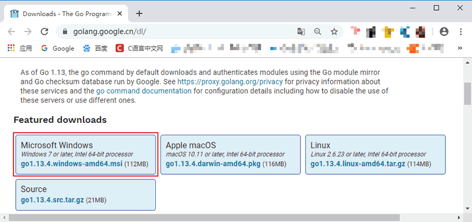
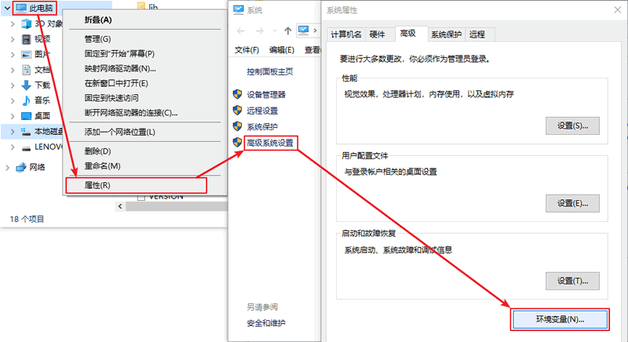
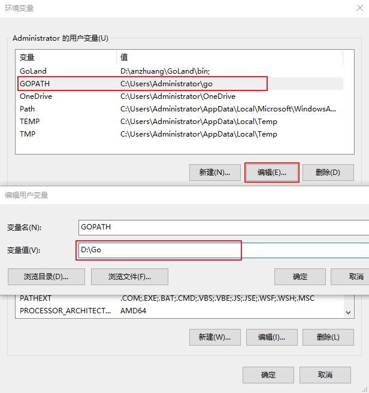

在Windows上安装Go语言开发包
通过前面几节的学习，相信大家已经对Go语言有了一定的了解，接下来将为大家介绍如何在我们的电脑上安装Go语言开发包，首先从 Windows 系统开始。
这里我们下载的是 64 位的开发包，如果读者的电脑是 32 位系统的话，则需要下载 32 位的开发包，在上图所示页面中向下滚动即可找到 32 位开发包的下载地址，如下图所示。

在 Windows 系统下Go语言开发包会默认安装到 C 盘的 Go 目录下，推荐在这个目录下安装，使用起来较为方便。当然，你也可以选择其他的安装目录，确认无误后点击“Next”，如下图所示：

Go语言开发包的安装没有其他需要设置的选项，点击“Install”即可开始安装，如下图所示：

等待程序完成安装，然后点击“Finish”退出安装程序。

安装完成后，在我们所设置的安装目录下将生成一些目录和文件，如下图所示：

这个目录的结构遵守 GOPATH 规则，后面的章节会提到这个概念。目录中各个文件夹的含义如下表所示。
开发时，无须关注这些目录。如果读者希望深度了解底层原理，可以通过上面的介绍继续探索。
在桌面或者资源管理器右键“此电脑”（或者“我的电脑”）→“属性”→“高级系统设置”→“环境变量”，如下图所示。
在弹出的菜单里找到 GOPATH 对应的选项点击编辑之后就可以修改了，没有的话可以选择新建，并将变量名填写为 GOPATH，变量值设置为任意目录均可（尽量选择空目录），例如 D:\Go。
环境变量设置好后，可以通过
如果大家想了解更多关于 GOPATH 的介绍可以参考《GOPATH详解》一节。
下载Go语言开发包
大家可以在Go语言官网（https://golang.google.cn/dl/）下载 Windows 系统下的Go语言开发包，如下图所示。

这里我们下载的是 64 位的开发包，如果读者的电脑是 32 位系统的话，则需要下载 32 位的开发包，在上图所示页面中向下滚动即可找到 32 位开发包的下载地址，如下图所示。
注意：下载 Windows 版本的Go语言开发包时尽量选择 MSI 格式，因为它可以直接安装到系统，不需要额外的操作。
安装Go语言开发包
双击我们下载好的Go语言开发包即可启动安装程序，如下图所示，这是Go语言的用户许可协议，无需管它，直接勾选“I accept ...”然后点击“Next”即可。在 Windows 系统下Go语言开发包会默认安装到 C 盘的 Go 目录下，推荐在这个目录下安装，使用起来较为方便。当然，你也可以选择其他的安装目录，确认无误后点击“Next”，如下图所示：
Go语言开发包的安装没有其他需要设置的选项，点击“Install”即可开始安装，如下图所示：
等待程序完成安装，然后点击“Finish”退出安装程序。
安装完成后，在我们所设置的安装目录下将生成一些目录和文件，如下图所示：
这个目录的结构遵守 GOPATH 规则，后面的章节会提到这个概念。目录中各个文件夹的含义如下表所示。
| 目录名 | 说明 |
|---|---|
| api | 每个版本的 api 变更差异 |
| bin | go 源码包编译出的编译器（go）、文档工具（godoc）、格式化工具（gofmt） |
| doc | 英文版的 Go 文档 |
| lib | 引用的一些库文件 |
| misc | 杂项用途的文件，例如 Android 平台的编译、git 的提交钩子等 |
| pkg | Windows 平台编译好的中间文件 |
| src | 标准库的源码 |
| test | 测试用例 |
开发时，无须关注这些目录。如果读者希望深度了解底层原理，可以通过上面的介绍继续探索。
设置环境变量
开发包安装完成后，我们还需要配置一下GOPATH 环境变量，之后才可以使用Go语言进行开发。GOPATH 是一个路径，用来存放开发中需要用到的代码包。在桌面或者资源管理器右键“此电脑”（或者“我的电脑”）→“属性”→“高级系统设置”→“环境变量”，如下图所示。

在弹出的菜单里找到 GOPATH 对应的选项点击编辑之后就可以修改了，没有的话可以选择新建，并将变量名填写为 GOPATH，变量值设置为任意目录均可（尽量选择空目录），例如 D:\Go。

提示：填写完成后，每个打开的窗口都需要点击“确定”来保存设置。
其它的环境变量安装包均会进行自动设置。在默认情况下，Go 将会被安装在目录 c:\go 下，但如果你在安装过程中修改安装目录，则可能需要手动修改所有的环境变量的值。环境变量设置好后，可以通过
go env 命令来进行测试。
C:\Users\Administrator>go env
set GO111MODULE=
set GOARCH=amd64
set GOBIN=
set GOCACHE=C:\Users\Administrator\AppData\Local\go-build
set GOENV=C:\Users\Administrator\AppData\Roaming\go\env
set GOEXE=.exe
set GOFLAGS=
set GOHOSTARCH=amd64
set GOHOSTOS=windows
set GONOPROXY=
set GONOSUMDB=
set GOOS=windows
set GOPATH=C:\Users\Administrator\go
set GOPRIVATE=
set GOPROXY=https://proxy.golang.org,direct
set GOROOT=c:\go
. . .
go env 命令后，出现类似上面的结果，说明我们的Go开发包已经安装成功了。如果大家想了解更多关于 GOPATH 的介绍可以参考《GOPATH详解》一节。
关注公众号「站长严长生」，在手机上阅读所有教程，随时随地都能学习。内含一款搜索神器，免费下载全网书籍和视频。

微信扫码关注公众号